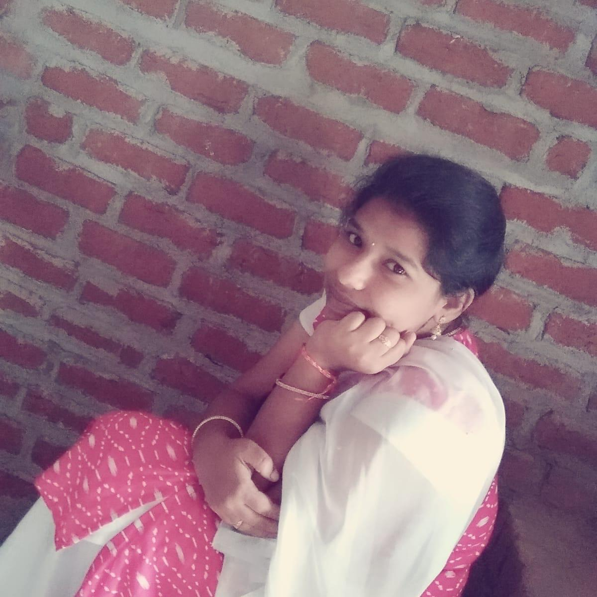

Curriculum Vitae

Sasi Rekha
32/182 gnana sammanthar south street
Sammanthapuram
Rajapalayam 626117
sasirekhamurugesan25@gmail.com
Carrer Objective:
-
To puruse a challenging carrer and be a part of progressive organization that gives a scope to enhance knowledge anda utilizing skills towards the growth of the organization
-
To be the part of an energetic organization and utilize my knowledge,Skills and expertise to contribute towards organization and professional Brilliance
Educational Qualifications
| Qualification |
Board |
Percentage / Grades |
Year |
| S.S.L.C |
Sri Rao Bhadhur AKD Dharmaraja Girls Higher Secondary School |
96% |
2015 |
| H.S.C |
Nadar Matriculation Higher Secondary School |
86.66% |
2017 |
| B.E |
Ramco Institute Of Technology |
Purusing |
2021 |
Independent Courses
-
Problem solving through C Programming – NPTEL.ac.in
-
Java Programming - NPTEL.ac.in
-
Projcts using PHP
Technical Skills
-
Concepts: Networking, operating systems
-
Programming Skills:HTML, CSS, Python, JavaScript,Java, learning C++
Projects Done:
Project I: Smart marketing system for farmers
Front End: Java
Back End: MYSQL
Description: This project can be implemented in online marrket. The main objective of this project is getting information about farmers and products and to give future predictons of the products Project II: Railway Tickets Reservation System
Front End: C
Back End: MYSQL
Description: This project can be implemented in railway. The main objective of this project is getting information about train and to reserve the future train ticketsProject III: Online Marketing system
Front End: Java
Back End: JavaScript
Description: This project can be implemented in online marrket. The main objective of this project is getting information about farmers and products and to give future predictons of the products
Area of Interest
-
C and Java Programming
-
Web desgining and development
- App Development
Additional Qualification
- Attended implant training in SILICON SOFTWARE SOLUTION in Madurai and ONE YES TECHNOLOGY in Chennai
- Attended workshop on Internet of things,Deep learning.
- Attended value-added course on Ardunio Programming,Web Designing.
About Me:
- Father's Name:K.Murugesan
-
Date Of Birth:25.07.2000
- Age: 20
- Gender:Female
- Phone:7358887557
Declaration
I hereby declare that the details furnished above are true and correct to the best of my knowledge and belief.